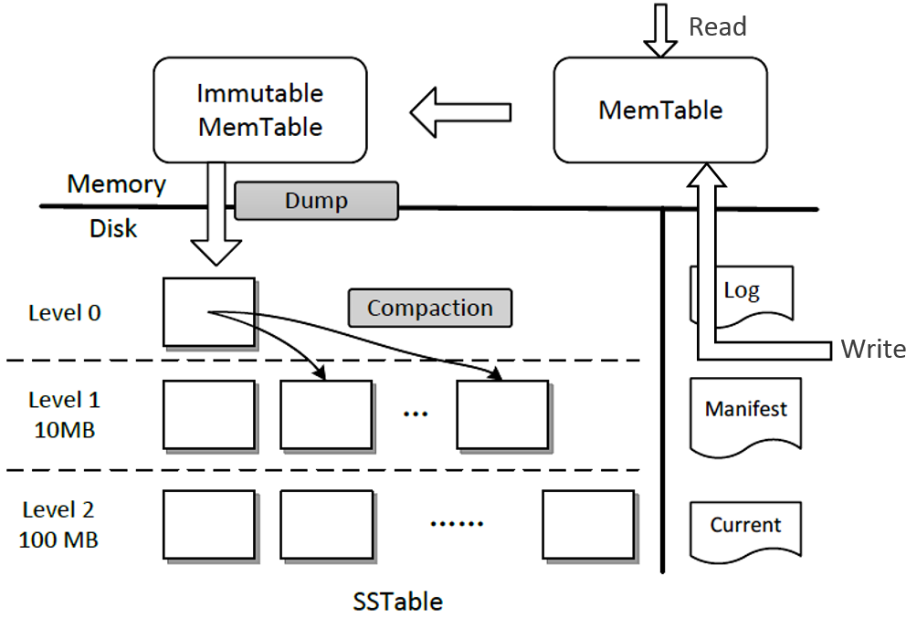

LevelDB #1 WAL
LevelDB Overview
lsm-tree 设计思路：
- 写日志，从而把写操作变成磁盘顺序写
- 写先存储在内存，再批量写入新文件，保证每个文件的数据有序，方便合并，删除失效数据
- 分层合并策略
LevelDB 是 BigTable 的存储引擎，是最早流行的使用 lsm-tree 的存储引擎。
LevelDB 架构图(在网上广为流传，应该是出自 MS 的一篇文章): 
LevelDB 系列文章的顺序：
- WAL
- MemTable
- SSTables 格式，压缩、合并
- 其他工程优化：Bloom Filter, Block Cache, Lock, Env
- MVCC 并发控制
- 完整读写流程
WAL
为了保证 MemTable 的数据不丢失，在写 MemTable 前会先写 WAL，重启时，重放 WAL 恢复 MemTable。正常情况一个 MemTable 对应一个 WAL，WAL 在 MemTable 成功落盘后删除。
所以 WAL 应该有2个接口：AddRecord() 和 Replay()。
LevelDB’s WAL 分成 log::Writer 和 log::Reader 2个数据结构。
Log File Format
LevelDB 有详细的文档：Log File Format.
log file 分成多个 block，block size = 32KB，每个 block 内有多个 record，record 不能跨 block，对于大的数据，需要分成多个 records (first + middle(s) + last)。
record header =
checksum: uint32 // crc32 of type and data[]; little-endian
length: uint16 // little-endian; block size = 2^16 B = 64KB > 32KB
type: uint8 // one of Full, First, Middle, Last
data: uint8[length]
// db/log_format.h
namespace log {
enum RecordType {
// Zero is reserved for preallocated files
kZeroType = 0,
kFullType = 1,
// For fragments
kFirstType = 2,
kMiddleType = 3,
kLastType = 4
};
static const int kMaxRecordType = kLastType;
static const int kBlockSize = 32768; // 32KB
// Header is checksum (4 bytes), length (2 bytes), type (1 byte).
static const int kHeaderSize = 4 + 2 + 1;
} // namespace log
Log Writer
namespace log {
class Writer {
public:
// Create a writer that will append data to "*dest".
// "*dest" must be initially empty.
// "*dest" must remain live while this Writer is in use.
explicit Writer(WritableFile* dest);
// Create a writer that will append data to "*dest".
// "*dest" must have initial length "dest_length".
// "*dest" must remain live while this Writer is in use.
Writer(WritableFile* dest, uint64_t dest_length);
Writer(const Writer&) = delete;
Writer& operator=(const Writer&) = delete;
~Writer();
Status AddRecord(const Slice& slice);
private:
Status EmitPhysicalRecord(RecordType type, const char* ptr, size_t length);
WritableFile* dest_;
int block_offset_; // Current offset in block
// crc32c values for all supported record types. These are
// pre-computed to reduce the overhead of computing the crc of the
// record type stored in the header.
uint32_t type_crc_[kMaxRecordType + 1];
};
} // namespace log
WritableFile 是在 fd 上封装一个 buffer，减少系统调用次数。
log::Writer 只有一个对外接口 AddRecord()，不需要实现并发安全，由调用者自己保证不会并发调用。AddRecord() 负责把数据分成一个或多个 record data。EmitPhysicalRecord() 负责把一个 record data + record header 写到 dest_.
AddRecord() 保证把数据写到 dest_，但是没有强制落盘，所以系统奔溃可能会导致写的 record 丢失。如果要强制落盘，要设置 options.sync = true 让 DBImpl::Write 调用完 AddRecord() 后调用 logfile_.Sync()。
DBImpl::Write 核心逻辑：
// Add to log and apply to memtable. We can release the lock
// during this phase since &w is currently responsible for logging
// and protects against concurrent loggers and concurrent writes
// into mem_.
{
mutex_.Unlock();
status = log_->AddRecord(WriteBatchInternal::Contents(write_batch));
bool sync_error = false;
if (status.ok() && options.sync) {
status = logfile_->Sync();
if (!status.ok()) {
sync_error = true;
}
}
if (status.ok()) {
status = WriteBatchInternal::InsertInto(write_batch, mem_);
}
mutex_.Lock();
if (sync_error) {
// The state of the log file is indeterminate: the log record we
// just added may or may not show up when the DB is re-opened.
// So we force the DB into a mode where all future writes fail.
RecordBackgroundError(status);
}
}
Log Reader
读取 log file。